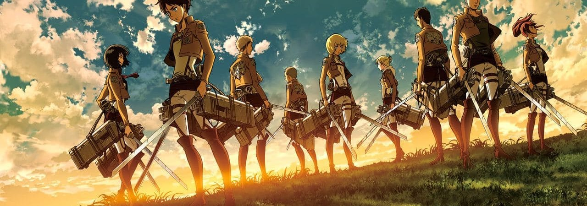

Priča
Likovi
Vojska
Mapa
Zanimljivosti
Galerija
Kontakt 

Attack on titan je anime koji prati istoimenu mangu koju je napisao i ilustrovao Hajime Isayama.
Radnja je smeštena u svetu gde čovečanstvo živi u gradovima okruženim tri ogromna zida koji ih štite od gigantskih čovekolikih humanoida koji se nazivaju Titani.
Priča prati Erena Jaegera, koji se zakleo da će istrebiti Titane nakon što je Titan doveo do uništenja njegovog rodnog grada i smrti njegove majke.
